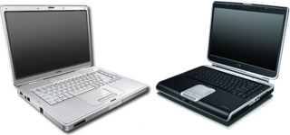
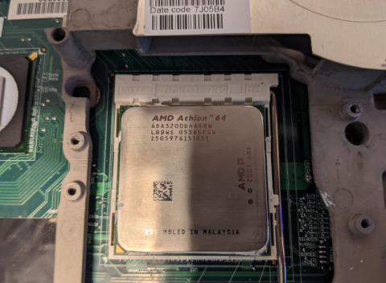

|
| |
HP Pavilion zv6000/Presario R4000 owner's guideIf you're here, then you own the zd8000's smaller, slightly more sane sister... the zv6000. Originally written 7/17/2022. Pictured: Compaq Presario R4000 and HP Pavilion zv6000. Overview of the hardwareThe HP Pavilion zv6000 (internally codenamed EKW70/Heisei for you prototyping nerds out there), also sold as the Compaq Presario R4000 for low-end markets, is a laptop that was made and sold by Hewlett-Packard from 2005 to 2006. These were equipped with a full Socket 939 AMD Athlon 64 processor, paired with DDR memory and the ATI RS480M chipset. As for graphics, these were sold with ATI Radeon Xpress 200M cards, with or without 128MB of dedicated video memory. "Full-featured boards" also supported HyperMemory, which can bring the VRAM up to 256MB using your RAM and the GPU's RAM. They were only sold with 15-inch 1280x800 LCDs, although the R4000 had options for 15-inch 1024x768 panels. They were sold with Windows XP Home, Professional, or MCE preinstalled, depending on what configuration you had. This is one of the last laptops to use the 1st generation HP Smart adapter plug, which was an oval-shaped charging port with 4 pins. This is one of the few 939 laptops sold, as full desktop CPUs in consumer grade laptops didn't always catch on after Intel released the Core Solo/Duo and Core 2 family of processors. This, along with the HP Pavilion zd8000, would be the last of their consumer-grade laptops with desktop processors. As HP and several other OEMs followed suit with Intel's new technologies, these would quickly begin to fall into obscurity. Working laptops with such components are usually hard to find, especially the zd8000! Even though it may not be as absolutely beefy as the zd8000, it was definitely better than its predecessor and Sony's PCG-K offerings, which actually started being phased out when these laptops hit the market. Even with no options for dedicated graphics, the Radeon Xpress 200M proved to be a big improvement over the IGP 345M and the Radeon 9000 IGP. The zv6000 and the R4000 were discontinued at some point in 2006, being replaced by the dv5000/dv6000 and Presario V6000 respectively.. However, seeing as how one reported a zd8000 made in 2007, this may not be the case. I have not exactly confirmed this one yet. Pictured: 939 socket with an Athlon 64 3200+ installed on an HP Pavilion zv6000. Photo courtesy of EvieSigma. Flaws of the systemAs with ALL desktop replacements from the time, these things just simply die from the VRMs being overworked. Luckily, the zv6000 has the advantage of NEVER coming with an option for Intel's CPUs, and was solely AMD-exclusive. Seeing as how AMD systems were much-better designed than Intel systems during that time (and now happening again), they would not get as ludicrously hot as the Pentium 4 systems did. However, all high-power laptops, especially ones from this point in time, did not exactly accomodate to have long-lasting VRMs or VRMs that would accomodate the power consumption entirely, leading to a lot of these being listed as "NO POWER/FOR PARTS" on eBay. Graphics cards RARELY or NEVER failed; the integrated solution was a good choice for this laptop. The zv5000, zx5000, and R3000 laptops all suffered from GPUs that either weren't being cooled (R9000IGP) or were simply an example of quantity over quality (FX5200Go). LCD displays from this time period usually had issues of vertical lines suddenly appearing due to some form of a manufacturing defect, but this is easy to fix as you simply need to replace the screen. I cannot think of any other problems aside from the fact that people did not really maintain laptops from this time period well enough. A lot of newer, more power-hungry electronics were introduced at the time and most were just unaware that these had 2 beefy fans pushing hot air out the back from a copper heatsink. Some people, including me to an extent, think that the issues on early-mid 2000s laptops simply come from people simply not maintaining/dusting their systems. The real issue was, this was just an impractical way to make a laptop... no one had power-hungry, heat-blasting desktop CPUs in mind when making laptops, and suddenly in 2003/2004 that just came to mind. Imagine a 15" laptop being made with a 12th gen LGA1700 i5... I'm actually GLAD this trend died. in other words please dust out your fucking computer no matter if its this or your desktop Maintenance levelThis laptop has the same amount of fans as the zd8000, minus one of them. If you said 2, you're right! They're big, loud, and push hot air out like it's nobody's business. They constantly collect dust, and it's ALWAYS a good idea to clean them out. You may need to do this somewhat more often if you're using the laptop more often as well. This isn't your baby 1.6GHz Pentium M Dell laptop... this is a monster that needs some more care than usual. Also, I cannot stress this enough... REPASTE, REPASTE, REPASTE!!! This applies to ANY system! No matter if it's your old Atom netbook from 2008 or a 20" laptop with a full gaming system inside, PLEASE replace that dry, crumbly gray substance called the factory application with FRESH thermal paste! I'm sure even the cheap stuff could do better than whatever the factory puts on... Luckily on these systems they usually have white silicone-based paste, but that would still have dried out enough to the point where it is no longer feasible to use anymore. You will ALWAYS need to do this on systems like these vulnerable desktop replacements. Also, install BIOS F.1C. Processor upgradesYou can install any 939 Athlon 64 CPU, and perhaps even the AMD Opteron chips on the same socket (which results in it being detected as AMD Processor model unknown due to missing microcodes). I recommend the Athlon 64 4000+ on the San Diego core. The cooler would be enough to handle it, and the extra 512KB of L2 cache (making 1MB/1024KB) would help significantly. You can also install the 3700+ from the same architecture. You also have the option of upgrading to faster Venice-based 939 chips. Storage, RAM, PowerFor a storage drive, I would recommend an mSATA/M.2 SATA to 44-pin IDE adapter with any appropriate SSD for your adapter of at least 64GB in capacity. The max RAM for this laptop and all other DDR laptops that support this capacity is 2GB. If only Socket 939 supported DDR2... ugh! Use the DR911A charger. If you find chargers by their part number, they can be cheaper to find. As for batteries, you can go with a 6600mAh DP390A Replacement Battery, but usually those are dead on arrival. You would be very lucky to find a replacement battery that works. You have better luck with generic batteries, too. Not exactly the best idea, but at least they have a chance of working. The battery is best used just to move it around for a short amount of time either in sleep mode or in a low-load state. I do NOT recommend running these on straight up battery power for extended periods of time. Pack a charger with you, no matter what laptop you use. You can also use the HSTNN-UB02 (or equivalent) battery with the zv6000. Operating systemFor these systems, I recommend a 32-bit or 64-bit OS of your choice. Windows XP Professional originally came with these, but if you're crazy like me and want to bring one of these to the modern world, you can install Windows Vista, 7, or 8.x. Radeon Xpress 200M drivers may be hard to find, but not for me; I always use a USB drive with Snappy Driver Installer loaded onto it with ALL of the driver packs. If you are looking for individual drivers, check drivers.eu and the Windows Update Catalog. Any form of x86-32 Hackintosh setups may be difficult with AMD processors, so I'm not even sure if it's worth mentioning here. ConclusionThe HP Pavilion zv6000 and Compaq Presario R4000 were one of several laptops HP made which sang the superb song for HP making laptops with desktop processors. The chargers, batteries, and even the laptops themselves were simply too bulky and power-hungry, especially as Intel and AMD both started making laptop processors that would be comparable to most desktop systems. By the time this laptop was released, the idea already started falling into obscurity as it soon became impractical with newer technologies on the rise. You would be lucky if you would see a working zv6000, R4000, or hell, even a zd8000 on eBay for a reasonable price, tested with its charger included... This does not mean it isn't a fun laptop, because damn, this is. It's more bearable than the zd8000 SOLELY because of the better CPUs these can run. Even with such lowly graphics, it would make for a nice light gaming XP system with games and programs from this time period. It's also somewhat usable today, if you know what to install! These laptops were MASSIVE internal improvements from their P4 and even Athlon XP predecessors. They had a better power delivery system, they had a much better cooling design, they actually bothered to keep the IGP cool, they made various refinements, THE LIST GOES ON! Obviously, they're not exactly the most reliable computers, but this was a much-needed push. And as a laptop with a 939 processor, it's probably worth owning one just for that gimmick! Not many socket 939 (or even 775) laptops were produced, and something like a desktop 754 or 478 laptop were far more commonplace. Yes, you could bring this to a coffee shop, even though it may not be as attractive as Hopefully this helped you out. If this didn't help you, hopefully you got a good read for today. I work on a lot of computers, and I always like to talk about some of the more interesting ones I come across. |